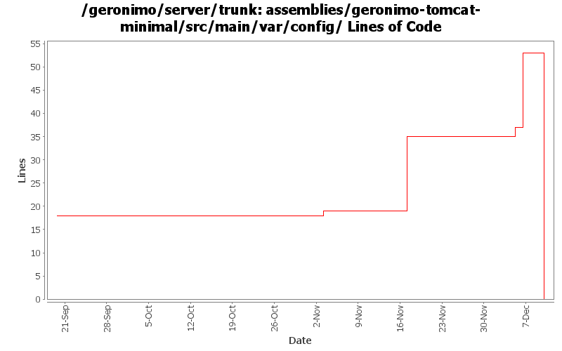

[root]/assemblies/geronimo-tomcat-minimal/src/main/var/config

| Author | Changes | Lines of Code | Lines per Change |
|---|---|---|---|
| Totals | 14 (100.0%) | 55 (100.0%) | 3.9 |
| kevan | 2 (14.3%) | 32 (58.2%) | 16.0 |
| jdillon | 4 (28.6%) | 18 (32.7%) | 4.5 |
| djencks | 4 (28.6%) | 3 (5.5%) | 0.7 |
| pmcmahan | 3 (21.4%) | 1 (1.8%) | 0.3 |
| jlaskowski | 1 (7.1%) | 1 (1.8%) | 1.0 |
change "tomcat" artifactIds to "tomcat6" for :
configs/tomcat6
configs/tomcat6-deployer
modules/geronimo-tomcat6
modules/geronimo-tomcat6-builder
assemblies/geronimo-tomcat6-jee5
assemblies/geronimo-tomcat6-minimal
updated various poms, deployment plans, and plugin-metadata.xml files to reference the new tomcat6 artifactId
0 lines of code changed in 2 files:
Add license headers to config.xml in our src tree. One of the files in examples was missing a license header, and i cleaned a few files up, that i noticed...
16 lines of code changed in 1 file:
GERONIMO-2624 Fix offline deployer. Remove geronimo-deployment from boot classpath and update lists of deployers
2 lines of code changed in 1 file:
GERONIMO-2616 change tx config is config.xmls also, all servers should start now
1 lines of code changed in 1 file:
GERONIMO-2537 Integrating patch supplied by Jay McHugh. Thanks Jaymvn -Ptools geronimo:start! Adds apache src header to files that were missing appropriate license information. This is everything except applications/console.
16 lines of code changed in 1 file:
GERONIMO-2537 All Geronimo source files must be brought in line with the new ASF source header and copyright notice policy
Fix for assemblies + svn propset svn:keywords
1 lines of code changed in 1 file:
Using ${version} instead of ${pom.version} in a feeble attempt to get around ${pom.version} changing to its timestamp version for SNAPSHOT artifacts
15 lines of code changed in 1 file:
GERONIMO-2465 Relocate plugin repository list to a source controlled location
1 lines of code changed in 1 file:
fixed previous checkin
add keywords/props
3 lines of code changed in 1 file:
keywords and props
0 lines of code changed in 2 files:
GERONIMO-2398 Create transaction and connector-deployer configs, clean up a lot of dependency problems, and fix major app client module builder classloader bugs
0 lines of code changed in 2 files: